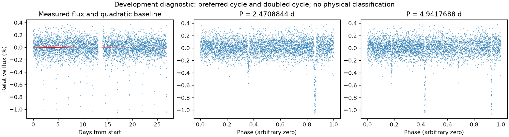
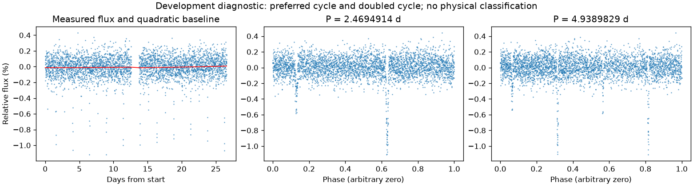

有重复信号，来源尚未充分检查
亮度重复周期约 2.47018791 天。这是优选亮度周期，未给出正式误差或物理分类。
第三版周期：2.4708843992789733 天；状态：preferred_lightcurve_cycle。

左图红线是缓慢基线；右面两图去除该基线。若未通过周期要求，两图只展示得分最高的竞争解释。
| 竞争周期（天） | 预测方法与改善 | 各组改善 | 通过初筛 |
|---|---|---|---|
| 2.4708844 | 交替循环：33.2% | 34.2% / 32.0% | 是 |
| 4.9383688 | 交替循环：25.0% | 25.2% / 24.8% | 是 |
| 1.2349370 | 交替循环：10.5% | -20.7% / 27.4% | 否 |
| 0.2747154 | 交替循环：5.1% | 4.3% / 5.8% | 否 |
| 0.1373452 | 交替循环：3.1% | -4.7% / 7.4% | 否 |
| 0.2472341 | 交替循环：3.0% | 7.8% / -6.5% | 否 |
| 0.0618068 | 交替循环：-14.5% | -6.7% / -29.9% | 否 |
| 0.1236211 | 交替循环：-15.3% | -39.3% / -2.7% | 否 |
“预测改善”衡量用一组周期的形状预测另一组，比只有缓慢基线好多少；负数表示更差。搜索和预测共用了资料，因此这不是可信概率，也不是独立验证。
第三版周期：2.469491428769864 天；状态：preferred_lightcurve_cycle。

左图红线是缓慢基线；右面两图去除该基线。若未通过周期要求，两图只展示得分最高的竞争解释。
| 竞争周期（天） | 预测方法与改善 | 各组改善 | 通过初筛 |
|---|---|---|---|
| 2.4694914 | 交替循环：35.7% | 35.9% / 35.5% | 是 |
| 1.2350517 | 交替循环：16.0% | -12.9% / 30.3% | 否 |
| 0.8233536 | 交替循环：12.7% | 11.3% / 14.0% | 否 |
| 0.4939088 | 交替循环：6.0% | 4.6% / 7.3% | 否 |
| 0.2472239 | 交替循环：3.1% | 9.1% / -8.2% | 否 |
| 0.4116201 | 交替循环：0.3% | -15.6% / 8.7% | 否 |
| 0.3089979 | 交替循环：-10.6% | -3.9% / -19.0% | 否 |
| 0.1545085 | 交替循环：-14.8% | -18.8% / -11.7% | 否 |
“预测改善”衡量用一组周期的形状预测另一组，比只有缓慢基线好多少；负数表示更差。搜索和预测共用了资料，因此这不是可信概率，也不是独立验证。